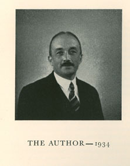

Vladimir Tchernavin

Перевод
Владимир Чернавин –один из тех нескольких счастливчиков, которым удалось сбежать из Гулага и обрести безопасность в Финляндии. Чернавин проживал в Мурманске, за Северным полярным кругом. Он работал рыболовным экспертом, когда его обвинили в саботаже, или по-просту критике Рыболовного плана. После ареста Чернавина сначала отправили в Соловки, потом – в Карелию для оказании помощи рыболовной промышленности. Чернавин договорился о приезде своей жены Татьяны и сына Андрея, во время которого они составили планы о побеге. В 1933 году они смогли осуществить свой план. Семья отправилась на пикник и села на лодку, которую Чернавин спрятал раньше. Каждый нес рюкзак с вещами, и они останавливались на привал всюду, где могли обнаружить кров. После многодневных скитаний семья безопасно добралась до Финляндии и переехала в Англию.
Арест
Каждый вечер, когда сын был уже в кровати, жена и я еще долго сидели вместе, в ожидании. Мы никогда об этом не говорили, но оба знали, что мы находились в ожидании, и это могут быть наши последние часы вместе. Это произошло, и довольно просто. Зазвенел звонок. Я открыл дверь и увидел старосту дома с незнакомцем в гражданской одежде. Я понял. Незнакомец вручил мне бумаги: ордер на осмотр и арест. Он вошел в комнату, которая служила и спальней и кабинетом, и начал осмотр. Осмотр был очень поверхностным, простая формальность.Когда жена вернулась домой, осмотр был уже завершен, и я начал подготовку к своей «поездке»: две смены белья, подушка, одеяло, несколько кусочкев сахара и несколько яблок. «Я готов, – сказал я агенту ГПУ, произнеся про себя, -готов для смерти.
Труд
Многие охотно отправлялись на такую работу вследствие болезненной монотонности тюремной жизни и вынужденной бесконечной безработицы, учитывая что эта работа давала возможность отвлечься и отдохнуть. Кроме того, заключенному на кухне иногда удавалось украсть или выпросить луковую головку. Необходимость в сырых продуктах была настолько серьезной для нас, страдающих от цинги, что каждый из нас с радостью поработал бы целый день, выполняя любой вид работы, если смог бы получить хотя бы кусочек луковицы. Однако досмотрщики разрешали подобное избавление от деморализирующей тюремной скуки только тогда, когда считали дело законченным. Высококвалифицированные инженеры соревновались за право выполнять сантехнические работы, чинить замки, телефоны и электроосвещение. Профессора претендовали на работы по полировки полов и уборки лестниц. Так, один священник в течение длительного времени, пока приговор не был приведен в исполнение, был ответственным за кипятильный бак.
СТРАДАНИЯ
Это послужило началом настоящей дружбы с уголовниками, чье отношение ко мне было глубоко трогательным. Так, один из заключенных принес мне немного холодного супа и немного каши, представляющей затвердевшую вязкую массу. Я не мог это есть. Я вынул из кармана забытое яблоко на удивление своих соседей. «Яблоко? Свежее? Как тебе удалось пронести его?Это строго запрещено.» Я не знаю; они пропустили. У меня есть еще. Хотите? «Почему бы нет. Хотим,» – ответил Павел с волнением и радостью в голосе. «Нам ужасно не хватает зелени. Здесь нам не дают ничего свежего. Это приводит к цинге. У Вани она уже есть.» Павел кивнул в сторону соседа. « К тому же мы не получаем никаких жиров, и поэтому у нас –язвы; иногда они просто ужасающие, особенно на желудке и спине.
ПРОПАГАНДА
Это послужило началом настоящей дружбы с уголовниками, чье отношение ко мне было глубоко трогательным. Так, один из заключенных принес мне немного холодного супа и немного каши, представляющей затвердевшую вязкую массу. Я не мог это есть. Я вынул из кармана забытое яблоко на удивление своих соседей. «Яблоко? Свежее? Как тебе удалось пронести его?Это строго запрещено.» Я не знаю; они пропустили. У меня есть еще. Хотите? «Почему бы нет. Хотим,» – ответил Павел с волнением и радостью в голосе. «Нам ужасно не хватает зелени. Здесь нам не дают ничего свежего. Это приводит к цинге. У Вани она уже есть.» Павел кивнул в сторону соседа. « К тому же мы не получаем никаких жиров, и поэтому у нас –язвы; иногда они просто ужасающие, особенно на желудке и спине.
Конфликт
Хотя в камере ночью должны были все угомониться, никто не спал.Староста стоял около своей койки и разгоряченно разговаривал с двумя заключенными с противоположного конца камеры около окна. У двери стоял человек в меховой куртке , держа свои вещи. Очевидно, это был новенький. Казалось, он был совершенно растерян. Он в тюрьме, но места для него нет. Он был 110 обитателем камеры, предназначавшейся для двадцати двух заключенных. Я стоял и ждал, слушая объяснения соседа по камере о происходящем. «Те двое –уголовники, бандиты. Места, которые они занимают на полу у окна и умывальника, немного шире, чем около спальных мест. Однако там холодно, потому что окно открыто всю ночь напролет. Староста приказал им принять новичка, но они отказались, заявляя, что у него нет никакого права размещать кого-либо в уже занятом месте.
Солидарность
Во время допроса Чернавину сообщили, почему его поместили в специальную камеру. « Я надеюсь, что мы придем к взаимопониманию, и я не буду вынужден изменить режим, который вытребовал для вас. Режим третьей категории- самый умеренный из всех: занятия во дворе, разрешение получать посылки с продуктами извне, газета и книги. Однако, помните, что это полностью зависит от меня. В любую минуту вы можете всего лишится, и вас переведут в одиночную камеру. Или, пожалуй, это зависит не от меня, но от вашего собственного поведения, искренности. Чем чистосердечние ваши показания, тем лучше условия содержания в тюрьме. Я поместил вас в обычную камеру с тем, чтобы ознакомить с нашими предписаниями. Вы ознакомитесь, так сказать, непосредственно с нашими методами, и я полагаю...., станете более сговорчивым. Мы отказались от средневековых методов; мы не подвешиваем за ноги и не срезаем куски кожи со спины. Однако, у нас есть другие способы, не менее эффективные, и мы знаем, как добиться правды.
Охрана
Когда Чернавин начал разрабатывать план побега, он встретил крестьянина, который предоставил ему некоторую потенциально полезную информацию. « Поверь мне, голубчик, у этих охранников есть все. Они варят кашу каждый день и едят ее с маслом. Щи варятся с мясом, и у них столько хлеба, что они не могут его доесть. И какая у них легкая работа! Район патрулирования составляет 15 километров, и они обходят его парами. Когда двое возвращаются, двое других отправляются в путь. В основном, они отдыхают и слушают радио. Они не любят ходить в лес. Боятся. Считается, что там прячутся сбежавшие заключенные, которые дожидаются их и могут убить.» «Берут ли они с собой собак?» «Нет, я никогда не видел,чтобы они брали собак. Возможно, собаки не тренированы. Так, я случайно узнал месторасположение нового пограничного поста в важном для меня регионе.
Выживание
Второго ноября я вернулся в Кемь. Здесь я обнаружил письмо от жены: она решила приехать на север и попытаться со мною встретиться. Я знал, что это будет сложно, но поездка произвела на меня хорошее впечатление, но не столько по причине моих официальных наблюдений, как в результате пятисот километров в гребной лодке. Его (главу Рыбпрома) также впечатлила моя записная книжка с ежедневными записями наших мероприятий, планов, демонстрирующих месторасположение всех промысловых объектов и районов Рыбпрома с зарисовками зданий и конструкций. Это был настоящий путеводитель по региону. Он не мог скрыть своего удовольствия, и я решил этим воспользоваться, предоставив ему раннее написанное письменное заявление от жены и сына о «личном визите». Я не ошибся, и мои начальники были довольны и разрешили пятидневный визит.
Судьба
Моя жена приехала с сыном. Мы решили вместе сбежать и приблизительно составили план на конец лета. Мы также определились с отправной точкой и точным местом для встреч. Жена и сын должны добраться до места в назначенный день; я должен сбежать, встретить их там и вести к границе. Мы придумали шифр для наших писем, каждое из которых подвергалось прочтению цензором ГПУ. Прошло пять дней, и они отправились. Я все еще был заключенным, но с единственной целью на протяжении семи месяцев: жить, чтобы быть свободными – или, если будет необходимо, умереть – но вместе. ... Без компаса или карты, мы проходили через горы, через леса и через болота, к Финляндии и свободе.
Item List
Prisoners
- Olga Adamova-Sliozberg
- Nina Pavlova Aminova
- Anna Andreeva
- George Bien
- Aleksandr Borin
- Edward Buca
- Boris Chetverikov
- Alexander Dolgun
- Nina Gagen-Torn
- Eugenia Ginzburg
- Gustav Herling
- Evfrosiniia Kersnovskaia
- Lev Kopelev
- Anna Larina
- Galina Ivanova Levinson
- Alfred Martinovich Mirek
- Margarete Buber Neumann
- John Noble
- Dimitri Panin
- Susanna Pechuro
- Evgeniia Michailovna Peunkova
- Lev Razgon
- Jacques Rossi
- Joseph Scholmer
- Thomas Sgovio
- Danylo Shumuk
- Michael Solomon
- Vladimir Tchernavin
- Alla Tumanova